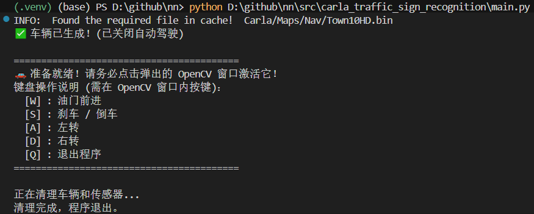

基于 YOLOv8 的 Carla 交通标志实时识别系统 (TSR)
1. 项目背景与动机
在自动驾驶系统（Autonomous Driving System, ADS）中，感知模块（Perception）是整个车辆智能化的基础。交通标志识别（Traffic Sign Recognition, TSR）不仅要求高准确率以确保行驶安全，还要求极低的延迟以满足实时控制的需求。
本模块作为 OpenHUTB/nn 仓库的重要扩充，首次将最前沿的 YOLOv8 轻量化神经网络与 Carla 高逼真自动驾驶模拟器深度结合，构建了一套端到端（End-to-End）的视觉感知验证流水线。本项目的实现，不仅弥补了现有框架在静态交通环境感知上的空白，也为后续接入强化学习控制模块打下了视觉数据基础。
2. 系统架构设计
本模块基于 “Server-Client（服务端-客户端）” 架构运行： * Server 端 (Carla Simulator)：负责物理引擎计算、光影渲染渲染、交通流模拟，并提供高保真的 RGB 传感器数据。
- Client 端 (Python 神经网络引擎)：通过 Carla API 接入，承担数据预处理、YOLOv8 模型前向推理、以及车辆的反向运动控制交互。
整个数据流转是一个闭环：场景渲染 -> 传感器采样 -> 神经网络目标检测 -> OpenCV 结果可视化交互。
3. 环境依赖与快速部署
为了确保模块的高效运行，推荐在带有独立显卡的设备上配置环境。
-
基础环境: Windows 10/11 或 Ubuntu 20.04+ (建议配置 NVIDIA GPU 并安装 CUDA)
-
模拟器: Carla 0.9.13+
-
Python: 3.8+
-
核心依赖库:
pip install ultralytics opencv-python numpy carla(注：
carla库建议直接安装模拟器目录下PythonAPI/carla/dist/中对应版本的.egg或.whl文件以防止版本冲突。)
4. 核心功能原理解析
4.1 虚拟传感器配置与数据融合
在代码实现中，我们在车辆（Ego Vehicle）前挡风玻璃位置挂载了 sensor.camera.rgb。
为了平衡“检测精度”与“推理速度”，传感器参数设定为：
-
分辨率 (Image Size): 800 x 600（降低分辨率可提升 FPS，但也可能导致远距离小目标丢失）。
-
视场角 (FOV): 90 度。
-
数据清洗：Carla 传回的原始图像为一维字节流，且包含 Alpha 通道（RGBA）。我们在
camera_callback回调函数中，使用 NumPy 将其迅速重塑（Reshape）为三维矩阵，并切片剥离 Alpha 通道，转换为标准 RGB 格式以适配 PyTorch 模型
4.2 YOLOv8 实时推理流水线
本模块直接调用了 ultralytics 提供的 YOLOv8n（Nano版本）预训练权重。
-
目标过滤：模型通过
classes=[11]参数，在 COCO 数据集的 80 个类别中进行掩码过滤，使得网络计算资源专注在“停止标志（Stop Sign）”的锚框（Anchor Box）回归上。 -
非极大值抑制 (NMS)：在模型后处理阶段，YOLO 引擎会自动剔除置信度较低或重叠度过高的候选框，确保同一个交通标志只会输出一个最精准的 Bounding Box。
4.3 异步渲染与人机交互逻辑
为了解决神经网络推理与 Carla 物理世界时钟同步的问题，本模块创新性地剥离了 Carla 原生的 Autopilot，引入了 OpenCV 按键事件监听机制。
在 main() 主循环中，系统通过 cv2.waitKey(1) 非阻塞地捕获键盘 W/A/S/D 指令，并将其映射为 carla.VehicleControl() 的油门（Throttle）、刹车（Brake）和转向（Steer）参数，实现了“人在回路（Human-in-the-loop）”的系统验证。
5. 运行步骤与交互指南
-
启动 Server：运行
CarlaUE4.exe，等待地图（如 Town10HD 或 Town03）完全加载完毕。 -
启动 Client：在
nn项目根目录下开启新终端，执行：python src/carla_traffic_sign_recognition/main.py - 交互控制：
必须用鼠标点击弹出的
Carla Traffic Sign Recognition视频窗口以激活键盘监听。 - W: 油门前进 | S: 刹车/倒车 | A/D: 左右转向 | Q: 安全退出并销毁车辆实例。

6. 运行效果展示
当用户驾驶车辆接近十字路口时，YOLO 模型能够在不同光照和角度下，稳定捕获交通标志。
(./assets/2026-04-18_222914.png)
图：Carla 模拟器中的实车第一视角，YOLOv8 成功锁定 Stop Sign 并实时绘制检测框，延迟稳定在 30ms 左右。
7. 局限性与未来优化方向
目前的 Demo 已验证了感知闭环的可行性，但作为工业级应用仍有以下拓展空间（欢迎后续开发者共同完善）：
-
中国交通标志数据集微调 (Fine-tuning)：目前模型仅能识别 Stop Sign，未来计划引入 TT100K 或 CCTSDB 等国内交通标志数据集，重新训练 YOLOv8 模型，实现限速、让行、指示等全类别覆盖。
-
感知与控制的融合 (P&C Integration)：将当前的检测框中心坐标转化为相对距离和角度误差，输入给 PID 控制器或强化学习（RL）智能体，真正实现“看见标志 -> 自动刹车”的全自动驾驶策略。
-
多传感器融合 (Sensor Fusion)：结合 Carla 提供的 LiDAR（激光雷达）数据，为 2D 交通标志检测框赋予真实的 3D 深度信息。